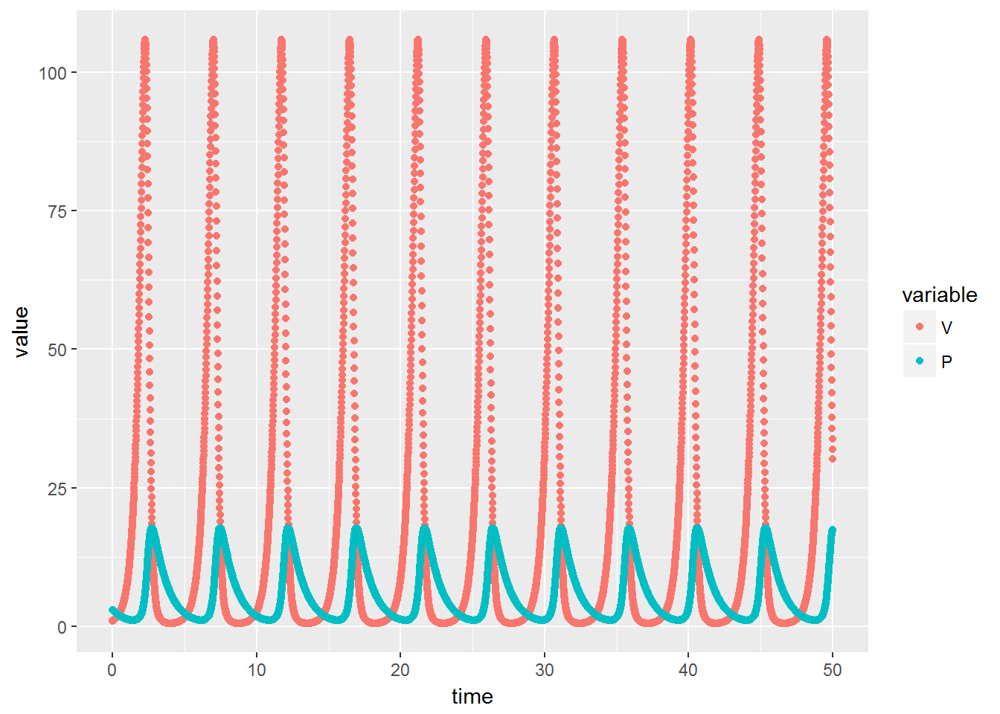

library(deSolve)
library(ggplot2)
time <- seq(0, 50, by = 0.01)
# parameters: a named vector
parameters <- c(r = 3, k = 0.5, e = 0.1, d = 1)
# initial condition: a named vector
state <- c(V = 1, P = 3)
# R function to calculate the value of the derivatives at each time value
# Use the names of the variables as defined in the vectors above
lotkaVolterra <- function(t, state, parameters){
with(as.list(c(state, parameters)), {
dV = r * V - k * V * P
dP = e * k * V * P - d * P
return(list(c(dV, dP)))
})
}
## Integration with 'ode'
out <- ode(y = state, times = time, func = lotkaVolterra, parms = parameters)
## Ploting
out.df = as.data.frame(out) # required by ggplot: data object must be a data frame
library(reshape2)##
## Attaching package: 'reshape2'## The following object is masked from 'package:tidyr':
##
## smithsout.m = melt(out.df, id.vars='time') # this makes plotting easier by puting all variables in a single column
p <- ggplot(out.m, aes(time, value, color = variable)) + geom_point()
print(p)